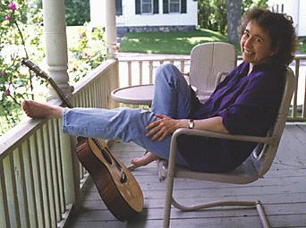

Gordon Bok: Links to Friends' Websites
Carol Rohl
 Carol began playing her grandmother’s 1912 Clark Irish harp in 1986 and now performs with a 34-string Triplett Celtic harp. She plays traditional Scottish, Irish and South American tunes as well as music by contemporary folk composers. She has performed with Gordon at a variety of venues in the US and Canada, and can be heard on several Gordon Bok albums.
Click here for more information about Carol.
Carol began playing her grandmother’s 1912 Clark Irish harp in 1986 and now performs with a 34-string Triplett Celtic harp. She plays traditional Scottish, Irish and South American tunes as well as music by contemporary folk composers. She has performed with Gordon at a variety of venues in the US and Canada, and can be heard on several Gordon Bok albums.
Click here for more information about Carol.
Cindy Kallet & Grey Larsen
 Cindy is one of Gordon's dearest friends. They have performed together in concerts and on Garrison Keillor's "A Prairie Home Companion" and after years of quiet appearances on each others' recordings, they collaborated on the album Neighbors. Cindy resides in Bloomington, IN with her husband, fellow musician Grey Larsen. Grey is well-known for his Celtic flute playing, and his musical talents extend beyond the stage to mastering and producing recordings for many other musicians.
Cindy is one of Gordon's dearest friends. They have performed together in concerts and on Garrison Keillor's "A Prairie Home Companion" and after years of quiet appearances on each others' recordings, they collaborated on the album Neighbors. Cindy resides in Bloomington, IN with her husband, fellow musician Grey Larsen. Grey is well-known for his Celtic flute playing, and his musical talents extend beyond the stage to mastering and producing recordings for many other musicians.
Visit Cindy's website or Grey's website to read more about them and their music.
See or purchase the album Neighbors here on Timberhead Music's Cindy Kallet's items page.
Bill Gallaher
Bill is the author of the song "The Last Battle" which appears on Gordon's album "In the Kind Land". "The Last Battle" won Ontario's Porcupine Award for Best Canadian History Album in 1995.
Visit Bill's website to learn more about his fine music.
Jim Stewart
Jim hails from New Brunswick and is the author of the acclaimed Marco Polo Suite, the epic tale of the fastest sailing ship of the 19th century. Learn more of the effort to construct a replica of this historic ship on Jim's site!
Visit Jim's web site
David Dodson
David is yet another local musician (isn't Maine a great pool of talent?) who writes great songs that run the gamut of American styles-folk, rock, blues, jazz and country. They cover a variety of topics and range from poignant to hilarious. Gordon recorded his song "Farthest Field" on the Bok, Muir, and Trickett album Harbors of Home.
Visit David's website.
Purchase the album Harbors of Home here.
Margaret MacArthur
"Margaret plays harp and mountain dulcimer. She collects songs, no matter where she goes. She is a loving and loved human being. Since I have been in the United States I have not met a finer song collector with a surer ear for all that is pithy and true in the songs of her country."
--Maggie Pierce, Tryworks Newsletter, New Bedford, Mass.
For her work with preserving the oral traditions she received many awards during her lifetime, including being designated a New England Living Art Treasure in 1985, being presented with a Senate Tribute in 1997, and, most recently, being invited to sing at the Library of Congress and the Kennedy Center in 2005. When Margaret wasn't on the road performing, she was mass producing her phenomenal home made bread, working in her beautiful gardens and living the simple life.
Margaret died in May, 2006. Gordon had the honor of singing with her in the last concert she performed.
Anne Dodson
Anne has brought her own special blend of traditional, contemporary and original folk music to audiences throughout the U.S., Canada, Russia and Great Britain for the past 23 years. Accompanying herself on guitar and mountain dulcimer, singing a cappella and playing penny whistle, she creates an atmosphere of living room ease, whether she's playing for 4 or 4,000.
Anne's website
Bok, Muir & Trickett
This well-loved and even fairly well-known trio first got together in the late sixties and have entranced audiences across the country ever since, with their lovely voices, seamless harmonies and masterful instrumentation. In 2000, they performed their Farewell Tour, dropping anchor on the traveling part of their musical collaboration, which they describe as "a wonderful mixture of art, friendship and indulgence." Along with their own solo albums, they have recorded eleven albums together. We have them all and each one a jewel.
See our Bok, Muir & Trickett page
Dave Goulder
Dave Goulder was born in 1939 of a Derbyshire farming family - a railway footplate man, mountaineer, motorcyclist, classical music enthusiast, Spanish guitar player, jew's harp virtuoso, songwriter, poet, singer, hedge layer, junk sculptor, naturalist, community arts administrator, drystone walling Master Craftsman/instructor, ceilidh band member, failed mandolin player, and arthritic.
Go to Dave Goulder's web site
"With over 8000 songs in the Mudcat Database you're sure to find what you're looking for. Search or Browse The Digital Tradition Folksong Database.
And if you don't find what you're looking for in the Digitrad Lyric Database try posting a
message to our Forum. Odds are your question will be answered within hours."
NOTE: This very cool Mudcat site by Max D. Spiegel and Dick Greenhaus provides a valuable service and resource to folk fans. Lyrics to many of Gordon's songs are posted there, along with simple one-finger midi piano melodies of several of his tunes. Try one of these fast-loading Mudcat midi tracks (sample: "Dillan Bay") to refresh your memory of how some Bok favorites sound!
Steve Gillette and Cindy Mangsen
Steve and Cindy and their partnership Compass Rose Music represent [some of] the very best in contemporary and traditional folk music.
Larry Hanks
Larry is a friend and fellow folk musician, from the San Francisco Bay area who performs "songs of other people's complicated lives in an uncomplicated manner" with his wife, fellow folksinger Deborah Robins.
Visit his website LarryHanks.com
Nick Apollonio
Nick is a luthier, whose instruments Gordon owns and plays. Gordon says "His 12-string guitars have a warmth and range of tone unaproached by any manufacturers."
Nick Apollonio Citterns, Apollo Stringed Instruments on Facebook.